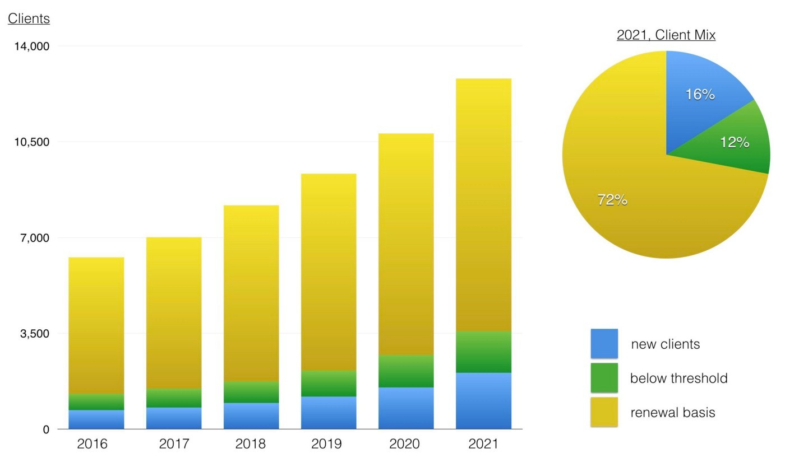
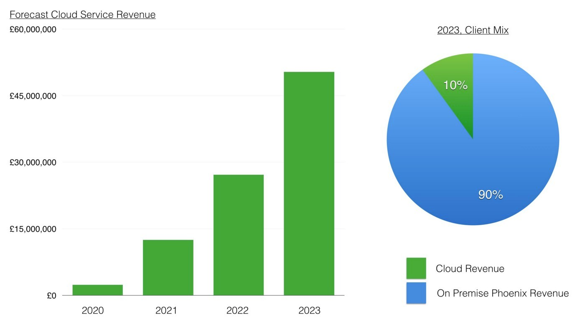
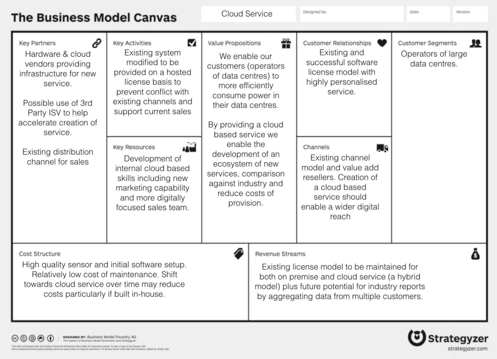
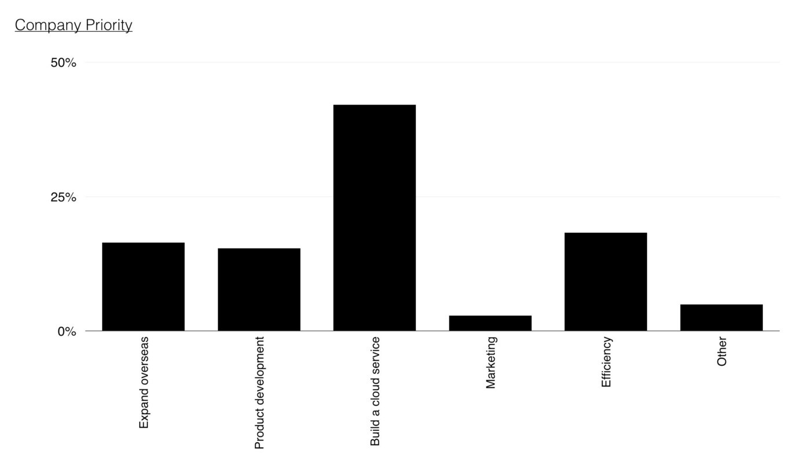
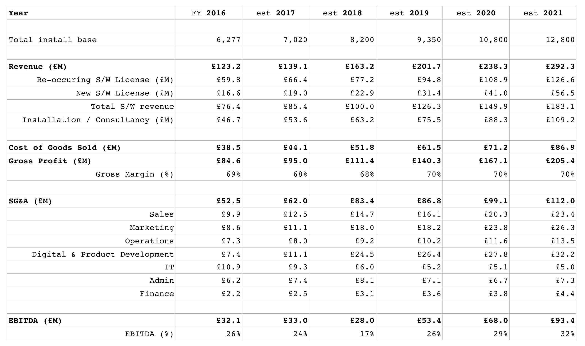

Chapter 12
14 min read
You are a member of the executive board of a huge conglomerate focused on facilities management. You’re attending a meeting of a wholly owned subsidiary company with their executives. You’re on a fact finding mission, trying to determine what the future of this subsidiary is.
There has been some recent positive noise about the subsidiary from analysts and also some interest by third parties in potential acquisition. This company offers a single product which is a software system that monitors a data centre’s consumption of power in order to determine whether it is being used effectively. The product is known as Phoenix.
The CEO introduces the company and their vision to provide customers with the best tool in the market for reducing power consumption and improving environmental performance. The CEO talks about their mission to “help reduce IT’s impact on the planet” and there is noticeably a great sense of pride and self belief within the group. The CEO reiterates their core values in a presentation. The values are described as being instrumental to the company’s success and they include responsibility, integrity, transparency, compassion, empathy, adaptiveness and decisiveness. The CEO then provides some background information, more for your benefit than anyone else’s.
The system involves a proprietary software package which performs analytics across data gathered from a sensor that is installed within a customer’s data centre. The sensor is a highly expensive piece of kit that is manufactured by third parties. The sensor monitors both the electricity input, the temperature and airflow within the building.
The analytics software is based upon a decade of best practice experience for the use of these sensors. The algorithms contained within the software package are considered to be the essential core IP of the subsidiary and they differentiate this product from everything else on the market. These algorithms are a carefully guarded secret. The software package also consumes a set of environmental data (which is provided by the company) that contains performance information on common hardware.
The setup on a client site requires:-
The system contains a learning AI which over time develops recommendations for improving the efficiency of power use from air conditioning, air flow, positioning of equipment, type of equipment and modes of operation. It has been shown to consistently reduce 10% of energy consumption within client sites with constant active monitoring. The process of setting up a new client involves a two day installation of equipment and software on premise. The service is charged for on an initial hardware and setup cost followed by a two year renewable software license. You note that the group is clearly proud of its accomplishments, the technological marvel they have created and their ability to deliver against their vision. Next up to speak is the head of marketing.
The name Phoenix inspires the ideas of regrowth, of nature and of power and this is heavily used in branding and marketing materials. The company is the largest vendor of such energy efficiency systems in Europe providing a complete service from on premise software package to sensor install. Your systems currently account for 43% of the 2016 market which is estimated at £301 million p.a. according to the latest analyst figures. The head of marketing discusses several successful online campaigns, its strong brand in the European industry and a recently run customer survey that has found a good to high level of satisfaction in over 90% of the client base.
Whilst the subsidiary has some competitors in Europe, most of these are offering highly custom built solutions that are extremely expensive. The head of marketing also points to data showing the current European market is only a fraction of the £3 billion p.a. applicable market and opportunities exist in growing market share, growing the current market and also expansion overseas. In terms of growing market share, an aggressive sales and marketing plan has been developed to increase MaSh from 43% to 65% by 2021. Phoenix is considered to be the leading European technology in the space according to latest analyst reports.
In terms of international expansion there are incentives for encouraging growth in markets such as Brazil in which currently no company is providing a well developed product solution. The head of strategy agrees and interjects by stating “we consider this to be a highly attractive future emerging market and one the company plans to exploit”. You notice the head of sales nodding in agreement.
The US market is larger and considered to be more mature. Over the last seven years there has been a software as a service offering in the US which uses the same sensor technology but with the main software package provided through a public cloud and sold on a utility basis rather than a license fee i.e. the client is only charged for when it is active and running. This has been considered successful and now commands nearly 40% of the US market. However, the US company involved has also been operating in Europe over the last five years. The competitor represented less than 3% of the European market in 2015 but their CEO has claimed in the press that they are growing rapidly and almost doubling in size each year with £15M in revenue in 2015. Though the competitor has not announced its final figures for 2016, it’s estimated by some reports to be around £25M. The head of sales adds that this is not a truly digital business as it still requires install of the sensor (either by the client or through a consultancy) and connection of the sensor to the public service. They state “the US competitor might have a cloud based solution but they lack our relationships”.
The CIO comments that the US solution provides some features that Phoenix does not have including cross company reporting, industry analytics and a public API. There are also a number of other companies building products on top of this competitor’s public API and their CEO describes a “fairly active development community is growing around this”. The Chief Digital Officer (who also runs the product group) adds that we will be building a cloud service. You sense a bit of tension here. You’re aware that the organisation was recently restructured with a younger and more dynamic CDO brought into the company. The CIO (the last remaining member of the original team who founded the company) has found herself more sidelined to internal IT and data management.
The CDO comments that there have also been recent social media stories about the US competitor “eating up” the business models of some of those product companies that have built on their API by adding similar capability into their own system. The head of sales suggests that the competitor is struggling to find its way and is being forced to resort to such cannibalistic action. He adds that “we rarely come across the US company in competitive tenders and in any case there are security concerns cited by some clients due to their cloud approach”.
The head of sales takes over the presentation and starts to run through the growth of the company. It’s obvious that there’s a lot of co-ordination between marketing, sales and digital and this team seems to be working well together. In 2016, the company had a record year with £123 million in revenue and over 6,277 customers including 690 new customers, 600 pre-threshold (installed and running but within first two years before renewal begins) and 4,987 on two year renewal. The digital group have been helping in providing mobile tools, communication and other capabilities for the sales team along with marketing tools for more targeted advertising. The expected growth in clients is provided in figure 161.
Figure 161 — Growth in clients

The attrition rate has been high in recent years at 9% but the Sales team believes this is due to a lack of new features and a high cost of software license renewal. To combat this, the digital and product team is being expanded with a focus on new features and the renewal price will be frozen for the next two years (leading to a drop in price in real terms) with possible further reductions due to an efficiency drive. It is believed this combination should enable the company to reduce the attrition rate to 5% or less.
Over the last year, the digital team has worked on improving both the social media reach, the website and the tools used in the company. The focus is now on product improvements and the development of a cloud service.
This will be one of the most significant investments taken in the history of the company, starting in 2018 and intended for launch near the end of 2020 with £45 million invested. The service will be provided on a license basis in order not to create conflict with the existing model and is considered to be a counter for any future threat from the US competitor as well as necessity for a modern technology company. It is expected that by 2023 (three years after launch), the cloud service will contribute almost £50M p.a. and account for over 10% of the company’s revenue, see figure 162.
Figure 162 — Cloud Service revenue

The Phoenix cloud service will provide cross company reporting and advanced analytics. These capabilities will also be included in the on premise service and the company will promote this hybrid model of public or private alternatives. The public service will run on a major cloud provider, using emerging DevOps practices. The core algorithms and logic of Phoenix will be maintained but adapted to this new world. The business model was then explored including a business model canvas (figure 163) outlining the new service.
Figure 163 — Business Model Canvas

Business Model Canvas framework from Strategyzer
Despite the benefit to clients in terms of energy savings through efficiency that Phoenix creates, there exists some concern over the high cost of the system in the market as was noted in the customer survey. There are two potential routes for reducing the cost — the sensor technology and data costs.
Sensor technology
The sensor technology accounts for 73% of the installation charge of £67K. There is a range of new, more commodity like sensors that has been launched in China by an extremely large manufacturer. These are far simpler, vastly cheaper (about 1/100th of the price of the existing sensors) and highly standardised. However, they are also extremely basic and lack the sensitivity and capability of the sensor that Phoenix uses. The CDO points out that the product team have attempted replacing the expensive sensor with one of these cheaper versions but the performance and analysis was severely degraded making the system almost unworkable. The CIO interrupts and says that “a potential solution could be to use lots of the cheaper sensors”.
The CDO points out that such an approach has been discussed several times before and would require a complete rewrite of Phoenix and an entirely new set of algorithms and techniques to be developed requiring a new R&D program. The head of operations who manages installations also chimes in that it would require a complete overhaul to process and an extensive upgrade path for over 6,000 existing installations. The CEO also adds that it would undermine the intellectual property developed in Phoenix. This is finally capped off with the Heads of Marketing and Sales both adding that this would create a marketing nightmare at a time of building both a new business in Brazil and a Cloud service. You sense that there is frustration with the group and the CIO on this topic which has apparently been raised many times before.
However, the operations, CDO and sales head all agree that despite these cheaper sensors being not good enough for the the job that the client expects, they nevertheless think it’s worth keeping an eye on the market. They are aware of the concept of disruptive innovation and how these cheaper sensors could develop. The CDO now turns to another opportunity.
Data set
One of the costs to the company is in the environmental data provided in Phoenix. This data requires extensive testing and modelling of various bits of kit commonly used within data centres. Whilst this is done in-house by the IT department, there is now a data set available on the market which offers this. It is considered by the product team to be good enough and vastly cheaper than the solution from the in-house IT team. The CDO estimates that by buying in the outside data set then the company could reduce the costs of Phoenix by 3% — 4% and we should move forward with this idea. The Sales and Marketing heads agree the company should not only focus on improving our existing software package but reduce costs where possible. The CIO agrees with this assessment despite the obvious implications for IT.
The head of strategy now discusses the future direction for the company. In a recent meeting, a number of directions were discussed with the entire executive team. These focused on the strengths of the company, the weaknesses in the existing product line, the potential opportunities in emerging markets and future threats such as the US player. Though the discussions have been “challenging”, the team developed a key number of actions that were considered to be urgent for the company. These were distilled into a new vision document called “Growth and sustainability for Phoenix”. These options were then investigated with the wider company management team through a collaborative effort, to create a priority list (see figure 164) which was then agreed with CEO to provide a final direction.
Figure 164 — Management priority order

The focus and the priorities of the company are :-
The CFO provides an overview of the company performance including a basic P&L for the company with estimates for future years (figure 165) that costs the program of changes highlighted by the strategy.
Figure 165 — P&L

The CFO highlights the following :
The CEO concludes the meeting and privately apologises afterwards for the reaction of the CIO. He explains “it has been difficult because of the changes. However, this organisation is no longer a startup and some people just have not found adjusting to this new world that easy”. You ask what he plans for the CIO and he comments with a wry smile “well, Sarah did express some interest in setting up the Brazil operation but I think she knows that sometimes you just have to move on”.
You have a call in forty-five minutes with the executive board. That’s how long you have to make your choices. The clock is ticking. So find a stopwatch and start it.
Your first task is to determine whether the company is heading in the right direction. You should determine whether you agree with the priority order given in figure 166. If not, write down what your priority order would be. If you decide to invoke “other” then scribble down what that other is.
Figure 166 — Priority order
Once you’ve decided your priority order then your next task is to determine what you’re going to say to the executive board.
Do try the exercise and spend that forty-five minutes on it. The temptation is always to skip to the next chapter and find the “answer” — if there is such a thing. However, that misses the whole point. This scenario is about you learning to play the game and to do so you need to put yourself in an uncomfortable position of getting things maybe wrong or maybe right. Try not to guess, try and work out why you feel this is the right or maybe the wrong thing to do. If you get flummoxed then give yourself a bit more time, maybe an hour and half at max but force yourself to make the choice.
You’re playing with the future of a subsidiary and all the lives that it effects. There are people whose dreams and livelihoods will change by what you say and what you choose along with a fortune to be won or squandered. You need to feel that pressure, the discomfort of not having long to decide and imperfect information to decide upon. You also need a way to communicate your findings to the rest of the executive board. This challenge isn’t supposed to be easy or comfortable.
If you’re feeling lost or out of your depth, remember we started this journey with “Being lost”. Every executive feels this whether they care to admit it or not. You’re being plunged into the water because eventually you have to play the game and there’s only so much you can do with reading. Don’t get disheartened, this is all part of learning.